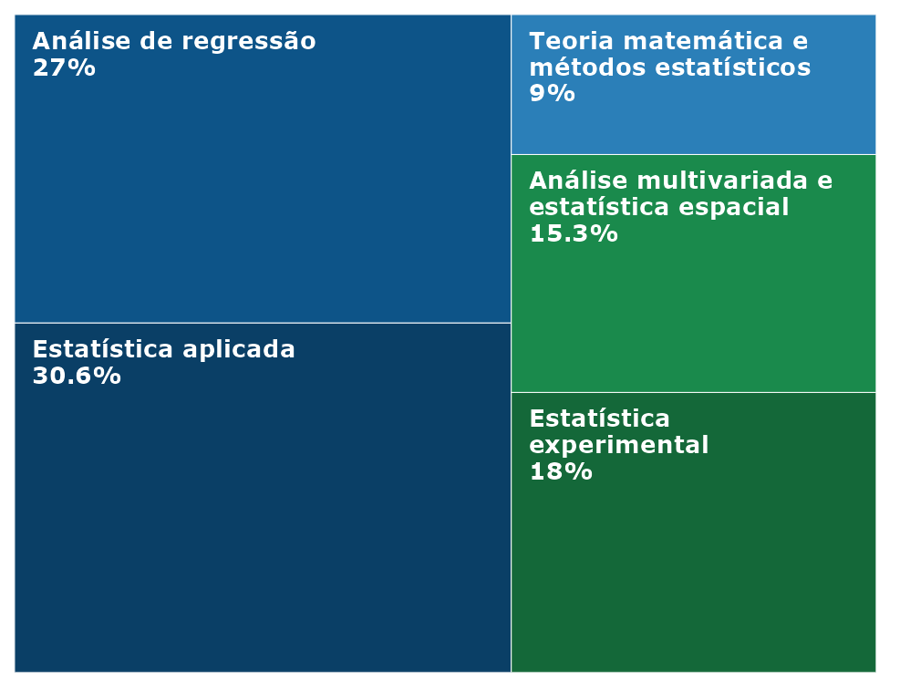
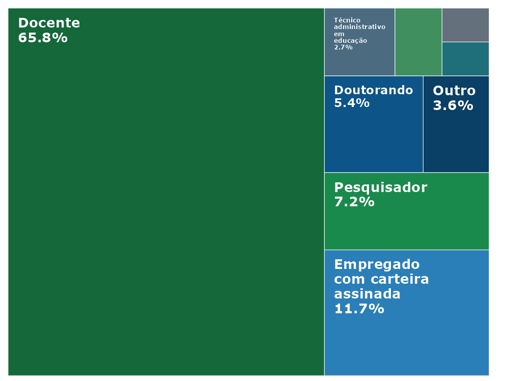
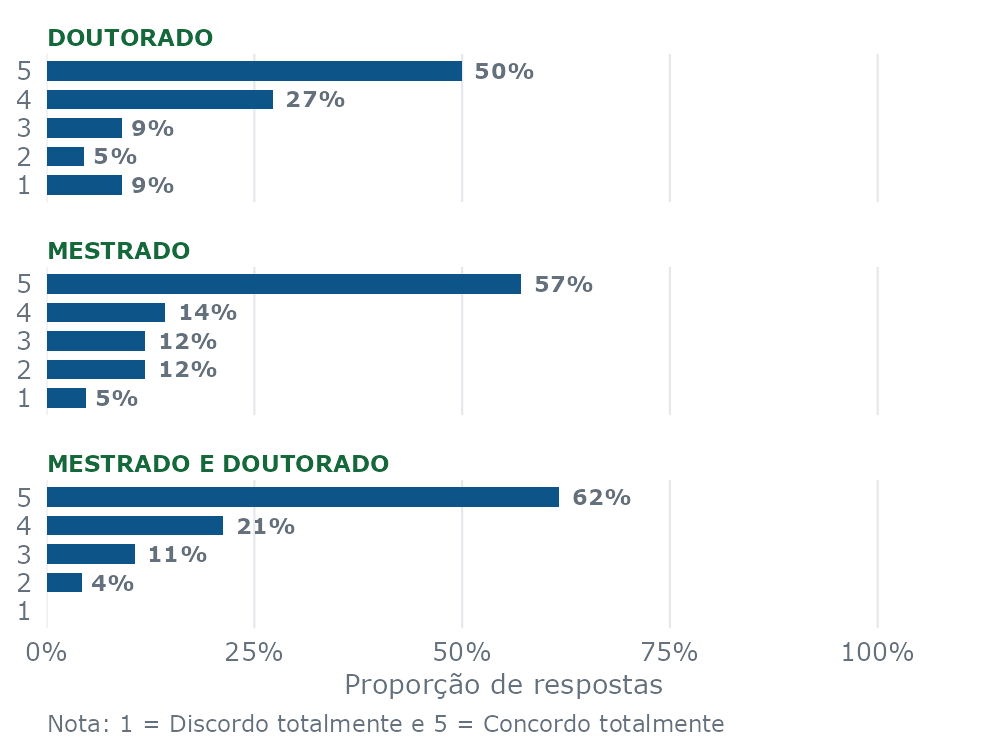
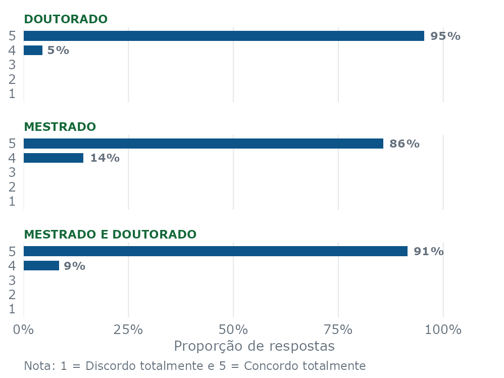
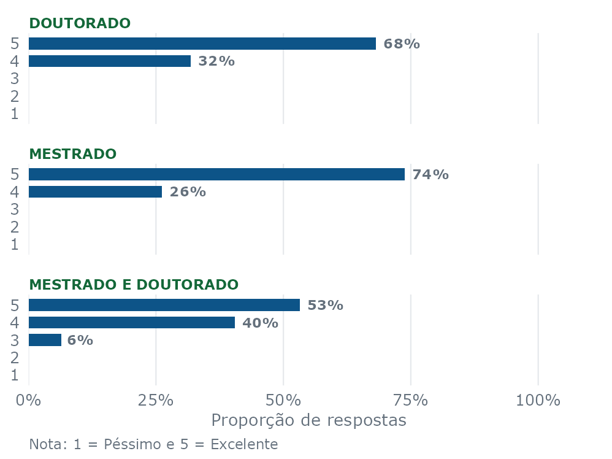
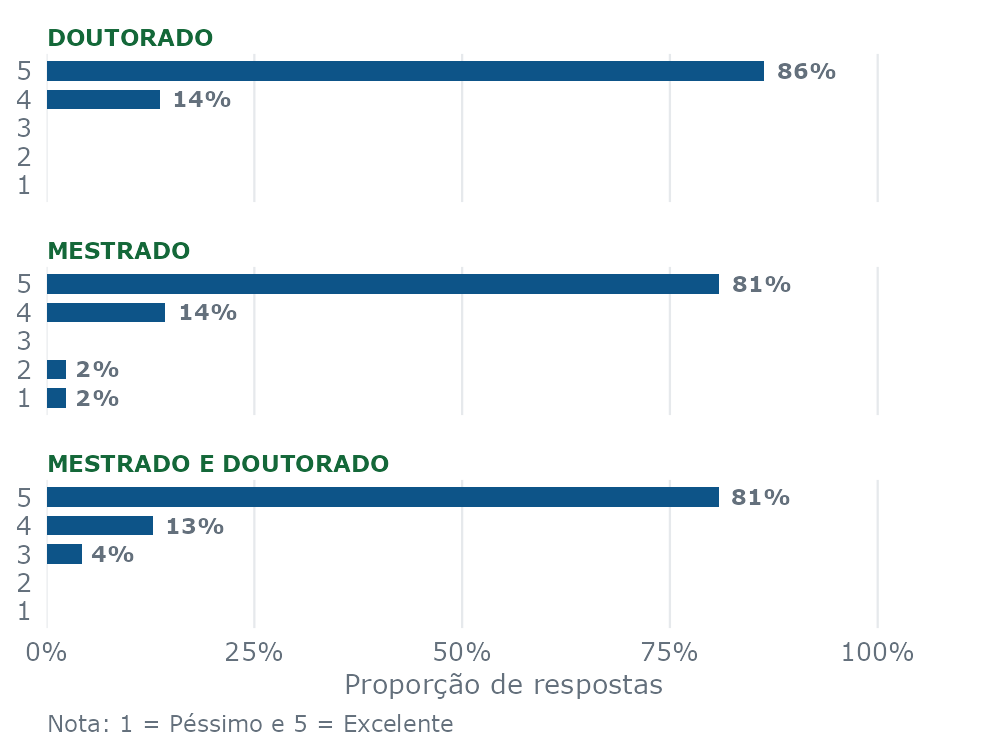
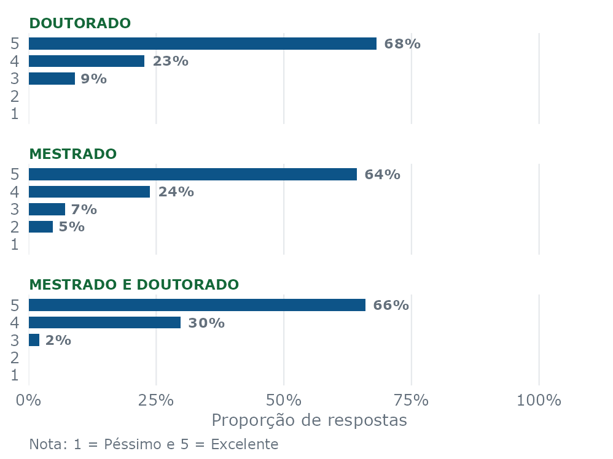

são do gênero feminino
44.1%
ainda mantêm contato com os professores do PPGEE
59.5%


As perguntas com afirmações em relação ao programa foram avaliadas em uma escala de 1 a 5, em que 1 refere-se a “Discordo Totalmente” e 5 refere-se à “Concordo Totalmente”.
Para as perguntas de avaliação da qualidade do programa, foi considerada a escala de 1 a 5, em que 1 refere-se a “Péssimo” e 5 refere-se à “Excelente”.





Sobre o PPGEE - UFLA
O Programa de Pós-Graduação em Estatística e Experimentação Agropecuária da UFLA concentra suas atividades no estudo e desenvolvimento de métodos estatísticos modernos para a análise de dados nas diversas áreas do conhecimento, mas com especial atenção à Estatística e Experimentação Agropecuária. O objetivo principal do programa é formar recursos humanos e garantir sua qualificação, aprimorando seus conhecimentos em Estatística e Experimentação para o exercício de atividades de docência e de pesquisa em instituições de ensino, pesquisa e em empresas, públicas ou privadas. As linhas de pesquisa são: Estatística Experimental e Aplicada, Teoria Matemática e Métodos Estatísticos, Análise Multivariada e Estatística Espacial, sendo que estas envolvem:
Estatística Experimental: planejamento de experimentos, análise de dados oriundos de estudos agropecuários e interpretação dos resultados obtidos;
Análise de regressão e séries temporais: estimação e predição de modelos lineares e não lineares e análise de dados cronológicos;
Teoria e métodos estatísticos: estudos de dinâmica de populações, inferência bayesiana e modelagem estatística e métodos de comparações múltiplas;
Estatística genética e genômica: ênfase na avaliação genética, em métodos de predição de valores genéticos e em inferências sobre parâmetros genéticos;
Métodos multivariados: proposição e avaliação de testes e análise de estabilidade de cultivares;
Métodos computacionais: uso de métodos computacionais intensivos e técnicas de data science na aplicação e desenvolvimento de métodos estatísticos;
Estatística espacial: análise de dados correlacionados espacialmente e espaço-temporalmente, em estudos de geoestatística, processos pontuais e análise de dados de áreas.
O programa é financiado com recursos do Programa de Apoio à Pós-Graduação (PROAP) da Coordenação de Aperfeiçoamento de Pessoal de Nível Superior (CAPES), além do financiamento da maioria dos discentes, por meio de bolsas de estudos concedidas pela CAPES, Conselho Nacional de Desenvolvimento Científico e Tecnológico (CNPq) e Fundação de Amparo à Pesquisa do Estado de Minas Gerais (FAPEMIG).
Sobre esse dashboard
Este dashboard foi obtido com dados de uma pesquisa realizada pela coordenação do PPGEE e iniciada em 2024. A todos os egressos do programa foi enviado um questionário online e identificado, com perguntas gerais sobre sua experiência com o curso. Até a presente versão, foram recebidas 111 respostas.
Última atualização - 02 de fevereiro de 2025
Contato: